This article explores the intersection of cultural, technological, and experiential transformations shaping Human-Machine Interaction (HMI) in China’s automotive industry. It reviews emerging social phenomena—such as rising emotional expectations, national pride, personalization, and affordability—and analyzes their implications for automotive user experience design. In parallel, it examines advancements in AI, autonomous driving, and immersive digital ecosystems that are redefining the role of in-car interfaces. Against this backdrop, the article proposes a set of strategic HMI directions for BMW, emphasizing intelligence-driven personalization, voice-first interaction, emotional connectivity, and culturally attuned design. The goal is to support BMW in developing a future-ready, user-centered HMI strategy that resonates with Chinese consumers while preserving the brand’s global identity.
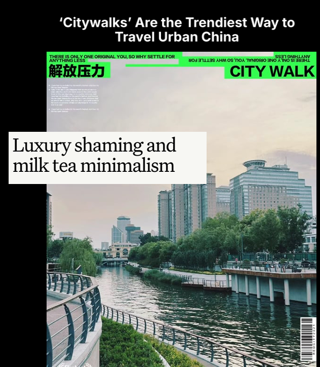
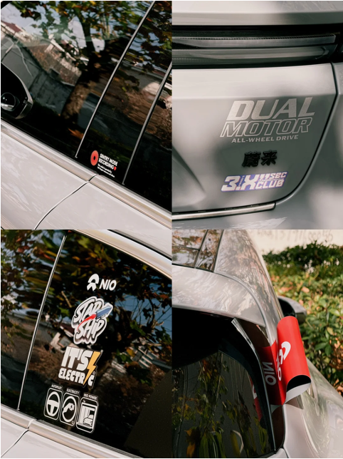
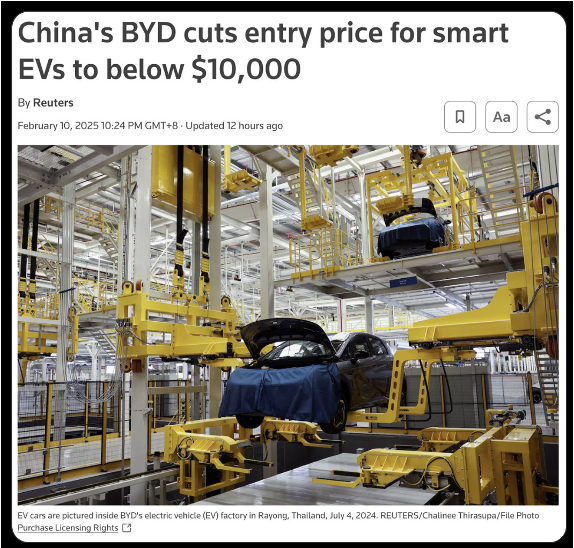

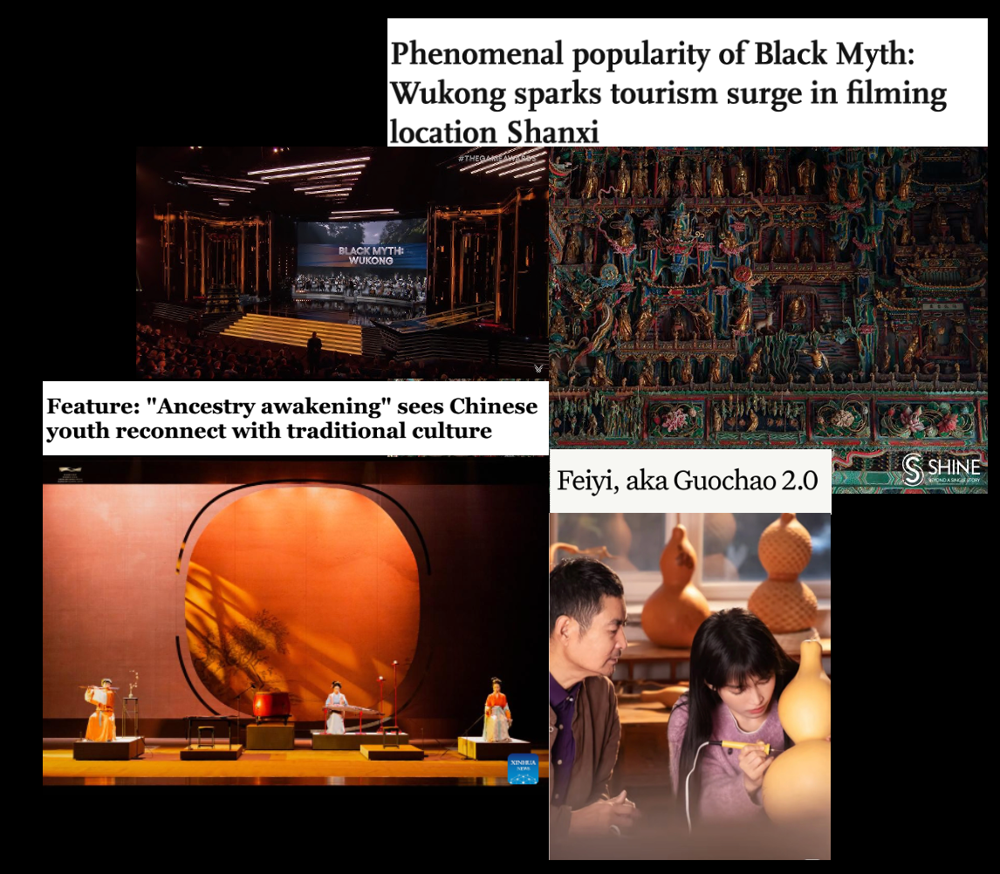
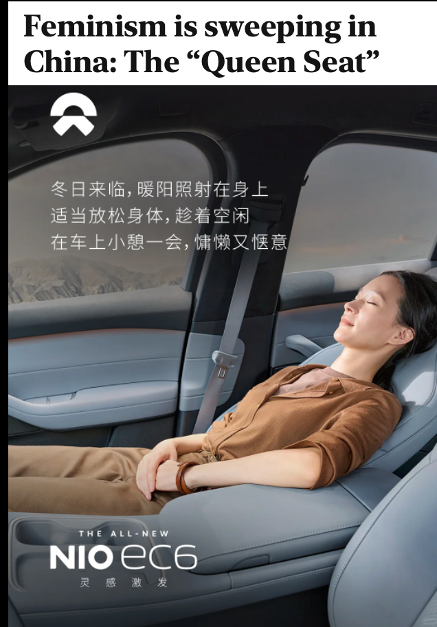
Role
Researcher
Institution
BMW Skylab (Shanghai R&D Center)
year
2025.1 - 2025.4
KEY WORDS
Design Principles, HMI, Phenomenons Review, Cultural Differences
Deliverables
Research Report (*Completed Independently)
chapter 1 | Introduction
The Changing Landscape: A Comparative Insight
Why the comparative perspective matters: Global VS China
To conduct a grounded and context-aware HMI trends analysis, the research propose a comparative global–China perspective as a foundational lens. This approach situates design inquiry at the intersection of global systemic shifts and localized cultural dynamics. The transition from the global VUCA framework to BANI reflects broader demands for emotional clarity, system resilience, and nonlinear adaptability. In parallel, our PNAD–RISE framework captures the specific tensions within the Chinese context—balancing economic and demographic precarity with resilience, innovation, and growing cultural confidence.
This dual framing allows for a more nuanced understanding of user expectations, where global users may prioritize emotional stability and transparency, while Chinese users increasingly value adaptability, national identity, and deep personalization. Acknowledging these layered dynamics is essential for designing next-generation HMIs (Human Machine Interaction) that are emotionally engaging, culturally relevant, and functionally robust across diverse socio-political contexts.

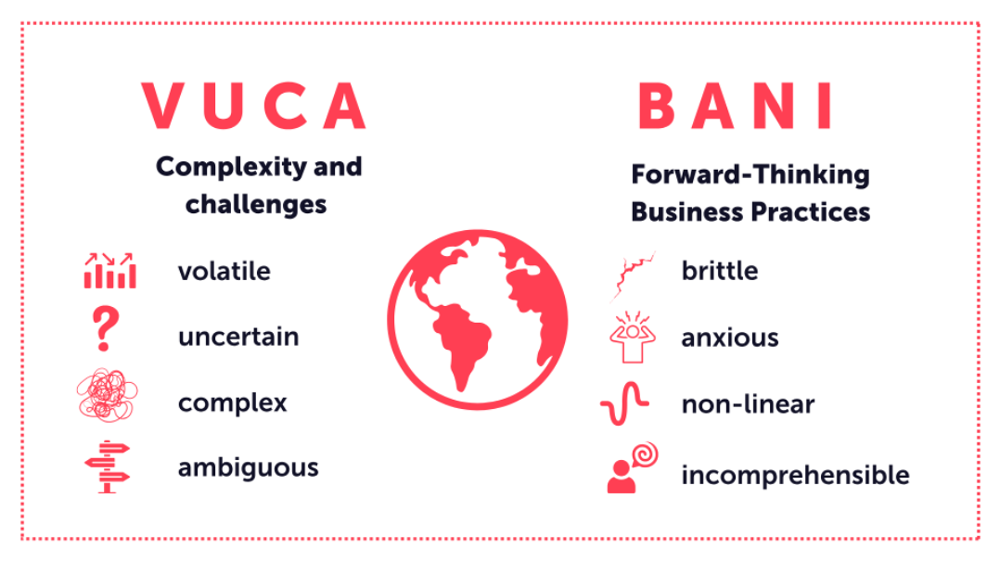

🌍 Global Landscape
The paradigm of globalization is increasingly being challenged by a more complex and unstable world order. Contemporary scholars and economists have begun to characterize this shift through the transition from the VUCA framework (Volatility, Uncertainty, Complexity, Ambiguity) to BANI—denoting conditions that are Brittle, Anxious, Nonlinear, and Incomprehensible. This conceptual evolution reflects a growing recognition of systemic fragility, heightened anxiety, and unpredictability across global systems.
🇨🇳 China Landscape
In this context, it becomes essential to examine how China, as a critical actor on the global stage, navigates these transformations. Drawing on both personal and observational perspectives grounded in local experience, this report proposes a dual-lens framework to analyze China’s trajectory:PNAD (Precarity in Nationhood, Aging, and Dependency) captures the structural and emergent challenges China faces in economic slowdown, demographic shifts, and increasing geopolitical tension.RISE (Resilience, Innovation, Self-Reliance, and Expansion) encapsulates the country’s ongoing capacity for adaptation, strategic advancement, and domestic momentum in response to these pressures.
chapter 2 | phenomenons overview and analysis
Phenomenon Observations
I started the trends analysis by presenting a series of observations in China with the categorization across three key domains: socio-political dynamics, technological advancements, and the automobile sector with a particular emphasis on Human-Machine Interaction (HMI). This layered approach provides a clearer understanding of how cultural context, technological ecosystems, and industry developments intersect, shaping the experiences and expectations of Chinese consumers in an increasingly digitized and mobile world.
01
Social-political Trends
" What Customers Prefer, and Why? "
Current socio-political trends in China reflect a significant shift toward emotionally meaningful, culturally grounded, and value-conscious consumption. Emotional engagement is redefining product value, with brands like Jellycat turning everyday objects into symbols of social identity and emotional connection. Personal vehicles are increasingly customized as expressive, domestic spaces, while AI companions serve not only practical but also emotional and philosophical roles. Alongside this, young consumers are embracing affordable, intentional lifestyles, showing a strong preference for experiences that align with their values. Simultaneously, there is a growing revival of traditional culture and a rise in national pride, both of which are driving consumer loyalty toward domestic brands that embody cultural relevance and technological confidence.
.gif)
Emotional, Affordable.
The uncertain future towards younger generation, there's increased unemployment and social justice concerns, all of this erode the economic faith of them.
Products that brings emotional companionship become a new social currency to "rule the market".
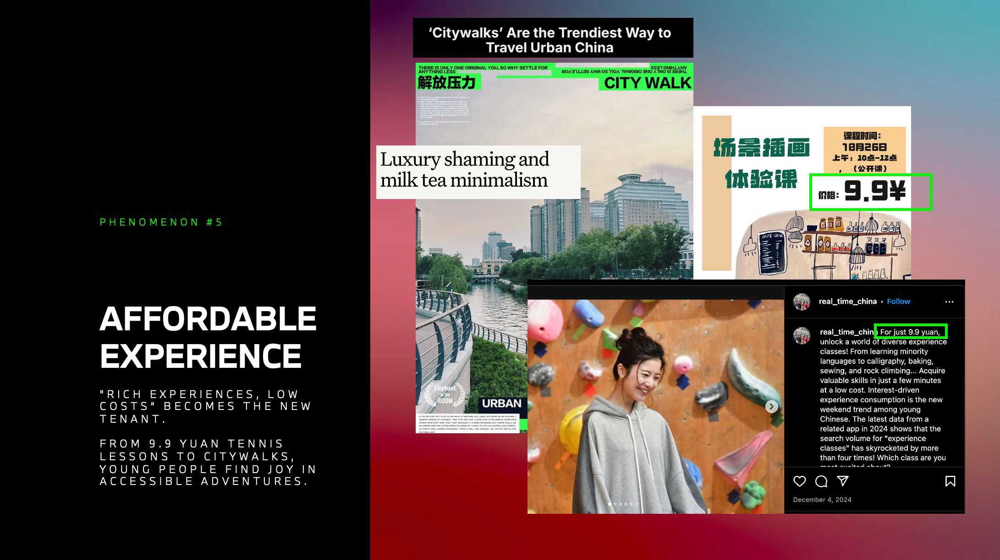


"Deepseek, my friend, my assistant."
Chinese users are training AI not just for efficiency, but to actively manage time and energy—shifting from passive task-doers to individuals in control.
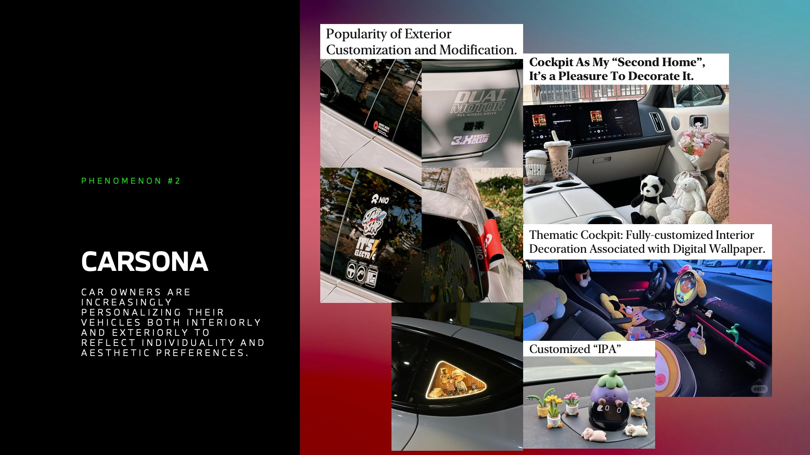
My car, My personality.
There’s a huge cultural difference in how C hinese customers treat their cars compared to Europeans; a car for a Chinese s a second home with capability and affordability of fully customization.
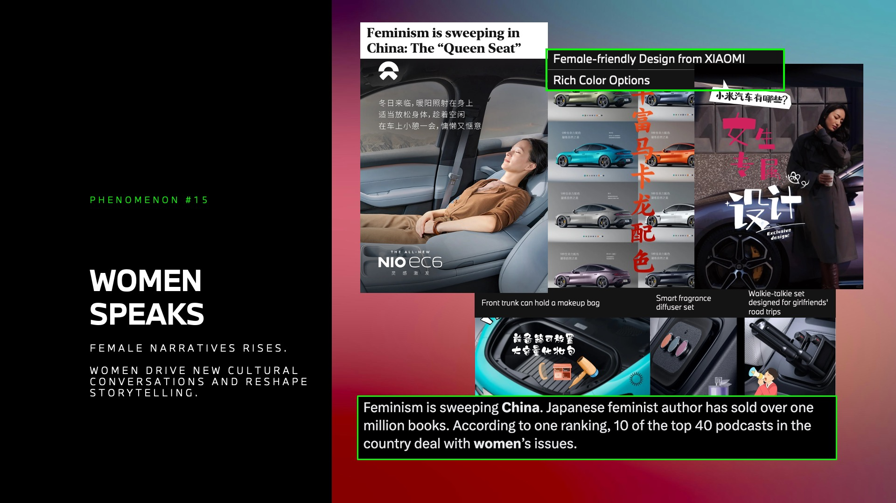
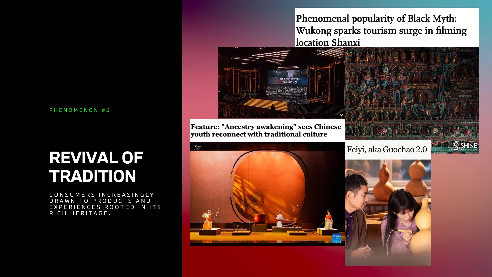
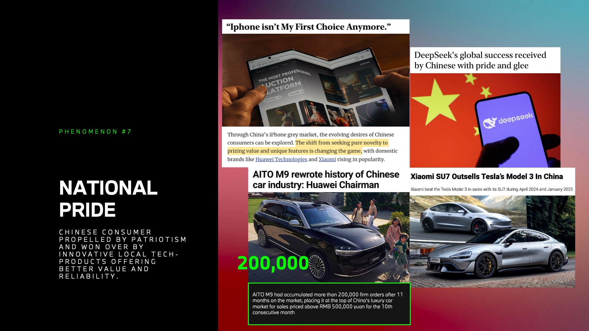
“I love Huawei and iPhone is not my first choice anymore”.
Rising national pride is shifting Chinese consumers' preferences towards domestic brands, diminishing the competition of global companies.
Together, these phenomena illustrate a user mindset that prioritizes individual expression, emotional resonance, and cultural identity in everyday consumption.ncreasingly value adaptability, national identity, and deep personalization. Acknowledging these layered dynamics is essential for designing next-generation HMIs (Human Machine Interaction) that are emotionally engaging, culturally relevant, and functionally robust across diverse socio-political contexts.
02
Technological Trends: AI, XR, Phygital Innovation
" Where Technology Drives Interfaces To? "
Recent technological developments in China highlight a clear trajectory toward AI-enhanced, multimodal, and emotionally responsive interface systems. Notably, the integration of XR into automotive retail—such as Xiaomi’s collaboration with Taobao on the “Test-Drive-At-Home” feature for the Apple Vision Pro—demonstrates how immersive technologies are transforming traditional e-commerce. Through the integration of AI and multimodal inputs—such as voice, spatial navigation, and gesture—interfaces are becoming increasingly intuitive and adaptive. Additionally, the blending of physical and digital environments through XR enables more immersive and personalized user experiences, while intelligent agents embedded in wearables foster new forms of continuous, human-like interaction.
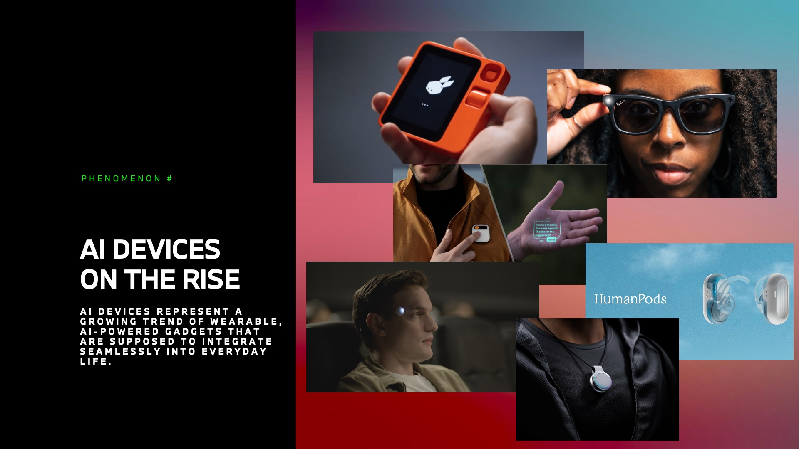
AI is dominating the social networking and raising new devices as well.
But is it real?
And do AI products tell the story?
When XR meets AI
Xiaomi SU7 collaborated with Taobao and enables the car being immersively experienced via XR hetset from interior to exterior with 1:1 ratio in Apple Vision Pro


Bloosom of multi-sensory interaction.
New means of interaction is being explored such as gesture control(Huawei), eye tracking via mobile devices. Visualization of voice assistant is transforming from emotional(NIO) to atmospheric (Apple Intelligence, IOS 18).

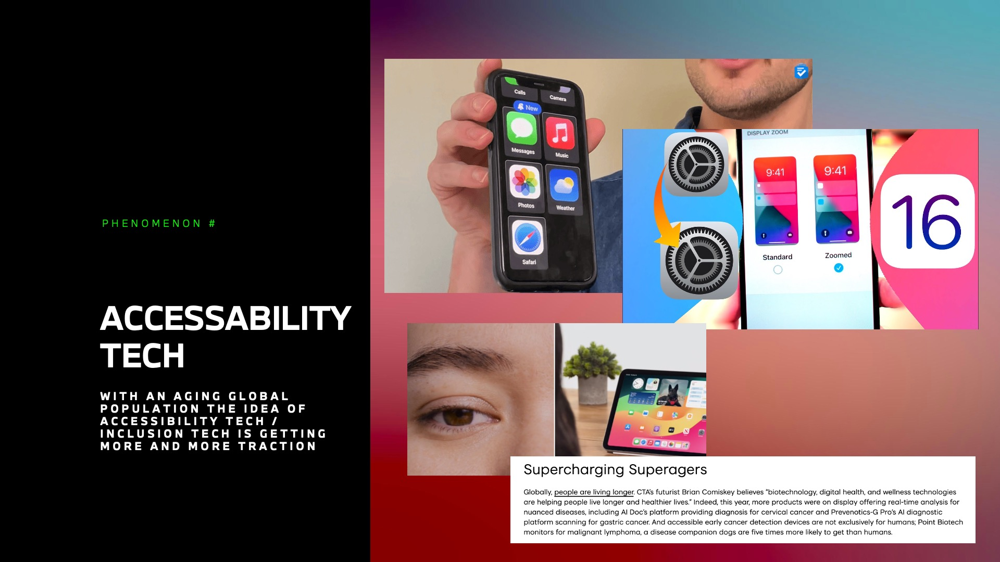
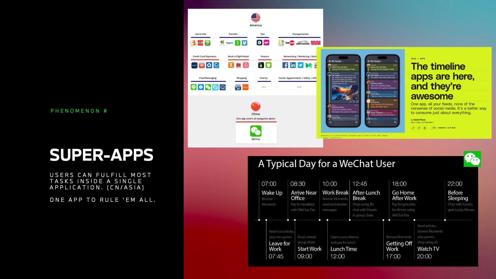
Auotonomy.
Chinese EV gaints such as BYD and Huawei, are expanding into humanoid robotics, leveraging theiradvanced technology and robust supply chains to diversify and drive new growth.

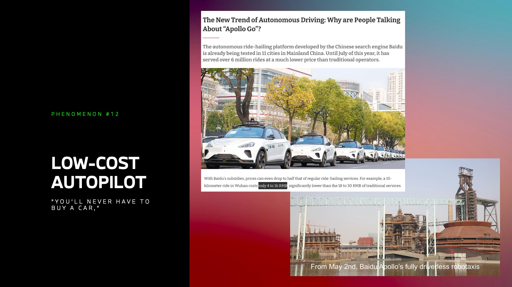
Technology advances interfaces by transforming them from static tools into adaptive, emotionally-aware systems—merging spatial computing, AI reasoning, and cultural context to deliver deeply personalized and human-centered experiences. The emergence of humanoid robotics reflects a broader movement toward integrating robotics into consumer and manufacturing ecosystems. Additionally, in the domain of personal devices, AI integration into wearables such as Rokid AR glasses and conversational earphones further exemplifies the convergence of language models with everyday hardware. These products now support real-time communication, navigation, digital payments, and even empathetic interactions, moving beyond tool-like functionality toward becoming ambient, conversational companions.
03
Automobile Trends
"State-of-the-art HMI"
The Human-Machine Interface landscape in China is experiencing a paradigm shift driven by advancements in AI, immersive technologies, and user-centered innovation. State-of-the-art developments include the democratization of ADAS features across all vehicle segments, the integration of generative AI for conversational and adaptive interfaces, and the emergence of immersive 3D visual design as a new aesthetic norm. Innovations in physical-digital (phygital) controls and display integration further blur the boundary between interface and interior architecture. Simultaneously, user co-creation models—exemplified by NIO’s community engagement—redefine the role of consumers as co-designers. Collectively, these trends point toward an HMI future that is intelligent, transparent, emotionally resonant, and culturally contextualized, offering valuable insights for global automakers seeking relevance in the evolving Chinese market.

Joy of EV Driving
Through immersive and exclusive UI, Electric vehicles presents a thrilling driving mode with racing functions, just for increasing the pleasure of driving.
The integration of physical and digital interaction embarks pleasant user experience.

Era of ADAS.
Advancement of ADAS not leads enables CN users towards a autonomous era, but also makes AI's decision making process visualized on driving (LI Auto).


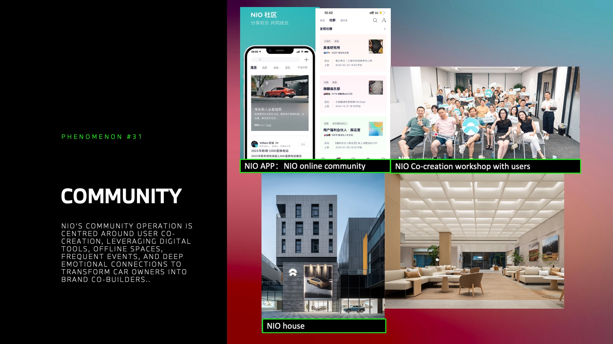
Personalized HMI.
Advancement of ADAS not leads enables CN users towards a autonomous era, but also makes AI's decision making process visualized on driving (LI Auto).
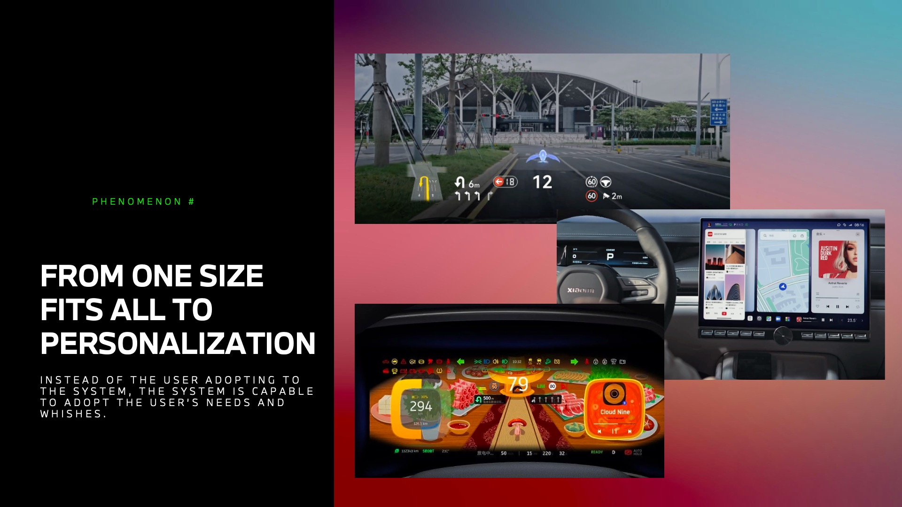
EV Giants
BYD and Huawei is taking lead of Chinas’s EV production with uutput of over eleven Million, Over 50% global Market Penetration in 2024.


chapter 3 | findings
What do we learn?
Contemporary Chinese consumers are redefining expectations for in-vehicle experiences across six key dimensions. Affordability is prioritized, with demand for premium features at accessible price points. Technological integration is expected, as AI, connectivity, and automation redefine usability standards. Autonomy is sought not just in driving, but in trust-enhancing, transparent systems. Flexibility remains essential, with customizable and adaptive interfaces addressing diverse personal needs. Affective dimensions, such as companionship and emotionality, highlight a shift toward AI that supports users emotionally. Finally, co-creativity signals the growing value of participatory design, as users engage in shaping the products they use. These shifts are pivotal in guiding next-generation HMI design strategies for the Chinese market.
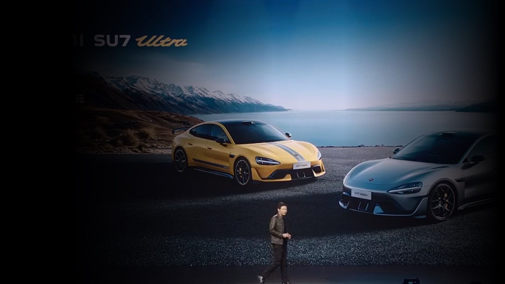
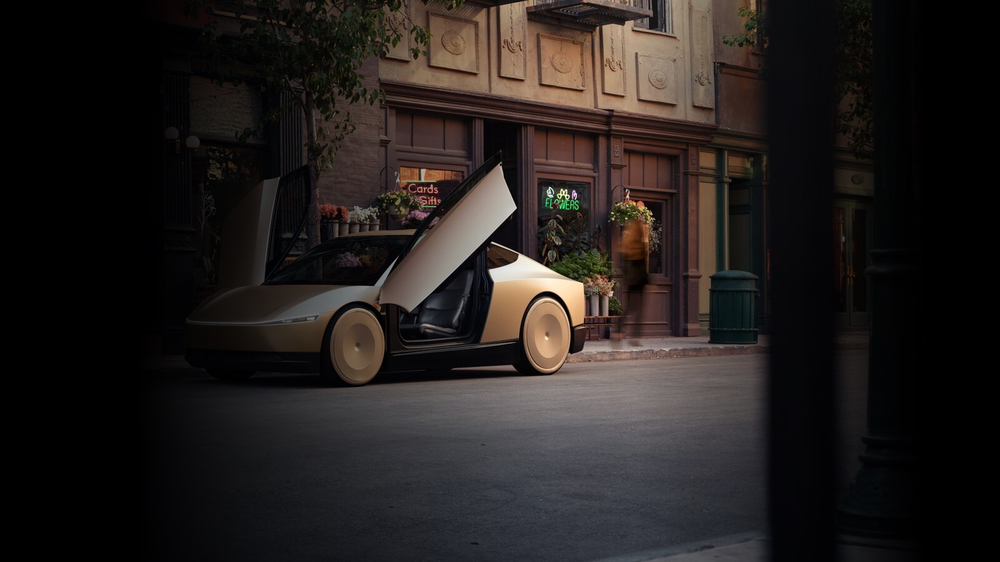
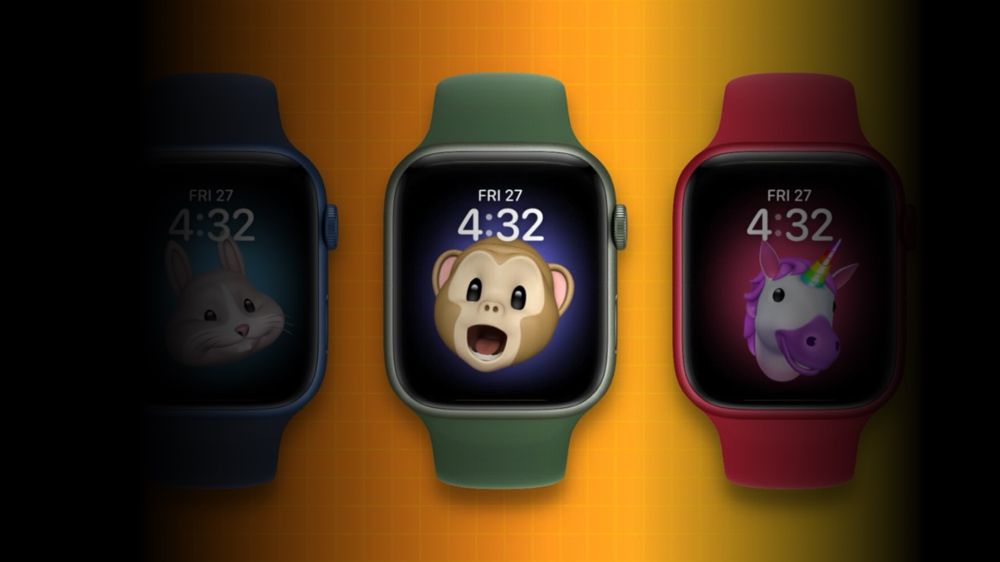
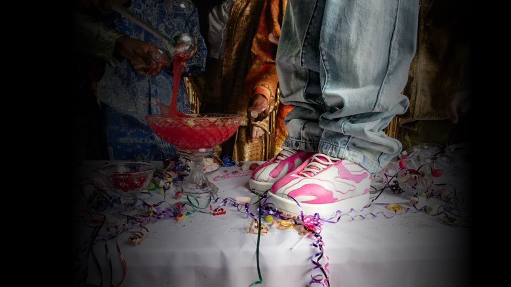
chapter 4 | Design Solutions
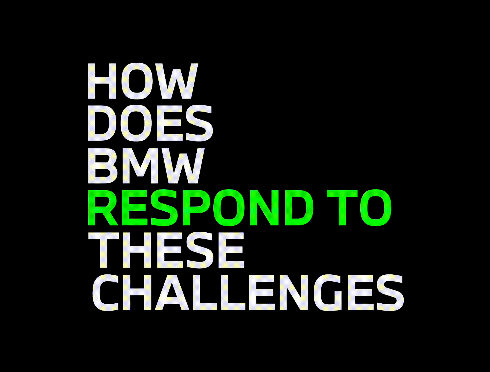
In response to China’s rapidly evolving user expectations, BMW proposes a comprehensive suite of HMI innovations grounded in intelligence, emotional resonance, and cultural relevance: Core to this is intelligence-driven personalization, where systems adapt to user habits, creating a vehicle that evolves with its driver. A voice-first interface, anchored by a responsive IPA, enables seamless, hands-free control and fluid scenario navigation. BMW should further develop emotion-responsive interfaces, combining display systems and ambient cues to strengthen affective bonds. A connected digital ecosystem ensures integration with users’ broader digital lives, while 3D fusion UIs and Effortless Operating System enhance clarity and reduce friction. Additional innovations include phygital touchpoints for intuitive control, Evolvity systems that learn over time, and Modern Classics that fuse heritage with future-forward design. Finally, cultural adaptation is essential—moving beyond motifs to authentically reflect Chinese values and lifestyles in the interaction and experience design. Together, these solutions position BMW to deliver a next-generation HMI that is adaptive, emotionally resonant, and locally meaningful.

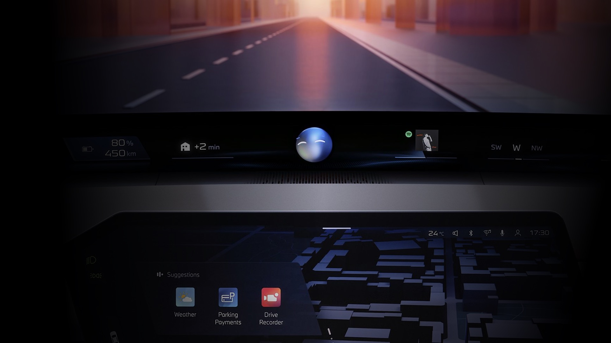
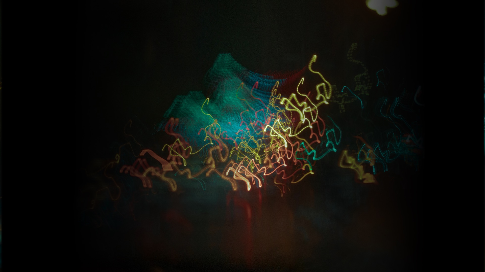

.gif)
.gif)
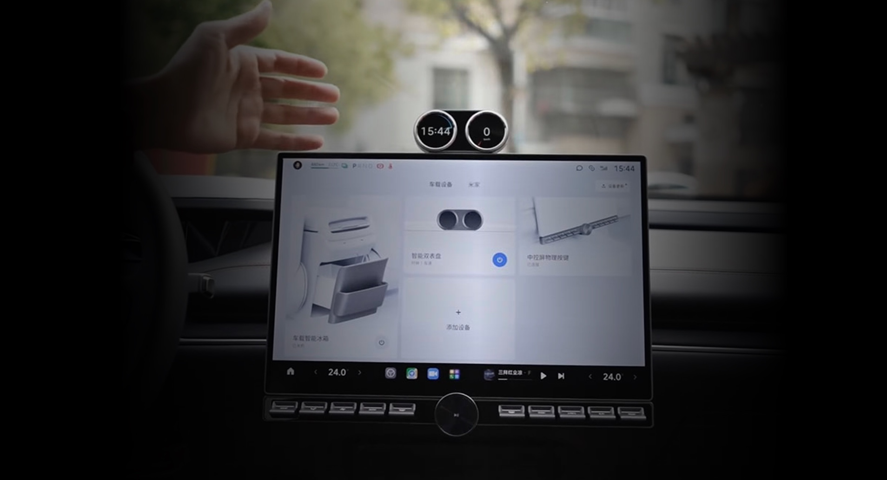
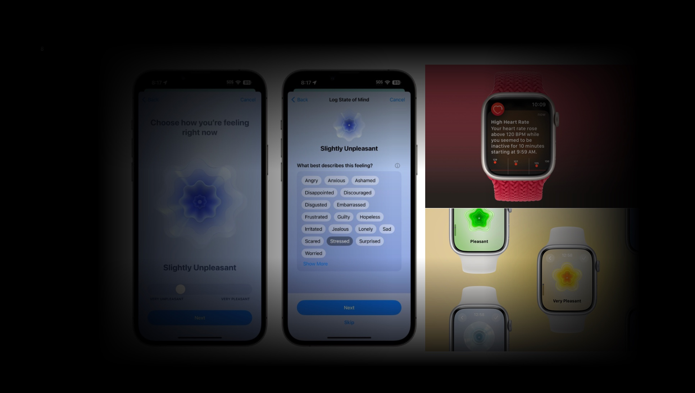
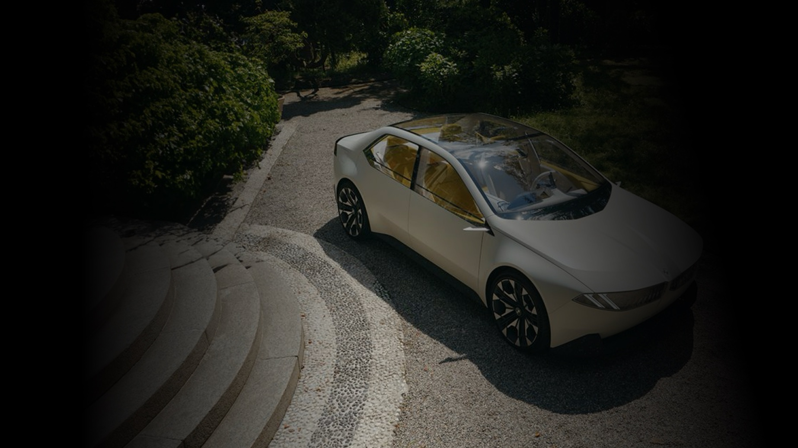
THE END
This article analyzes emerging socio-technological and consumer trends in China and proposes strategic HMI directions for BMW. It highlights key shifts such as affordability, emotional engagement, personalization, and cultural pride, and explores how technologies like AI, 3D interfaces, and voice interaction are reshaping user expectations. In response, a set of HMI solutions is proposed—emphasizing intelligent adaptation, seamless interaction, emotional design, and cultural integration—to guide BMW in creating future-ready, user-centric experiences tailored to the Chinese market.